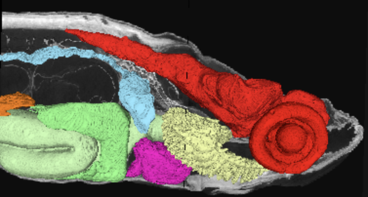

Anatomy & histology across the life span — from 24 hpf embryos to 36 mpf adults

BioAtlas presents complete series of brightfield virtual slides of the zebrafish (Danio rerio) sectioned in the coronal, sagittal, and transverse planes at developmental stages spanning the entire life span. Slides can be explored at up to 40× magnification in the in-browser virtual slide viewer. Selected series are annotated with anatomical labels.
Browse the full atlas → · Explore 3D micro-CT — slice in any direction →
The project is funded by NIH ORIP 1R24OD037633